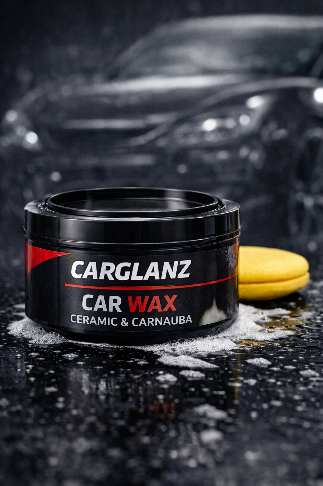

What Are Swirl Marks — and Why Are They So Common in India?
Swirl marks are microscopic circular scratches in your car's clear coat layer. They do not go through to the colour (base coat) or primer — they live entirely in the top protective layer. When light hits them at an angle, they scatter light in a circular pattern, creating the haze or spiderweb effect you see on your paint.
In India, swirl marks are extraordinarily common for a specific set of reasons:
- Roadside car washers use single buckets, rough cotton cloths, and the same dirty sponge on fifty cars a day. Each wipe drags grit from the previous car across your paint.
- Petrol pump automatic car washes with rotating brushes carry abrasive brake dust and sand from hundreds of vehicles. One pass through these creates visible swirl marks.
- Dry wiping a dusty car — arguably the single most common cause in India. Wiping a car covered in fine dust, sand, or diesel particulate with a dry cloth is equivalent to sanding your clear coat with fine-grit paper.
- Hard water drying — leaving water to evaporate in Indian heat deposits mineral crystals that create micro-abrasions when wiped off.
Modern cars have a clear coat that is just 50–100 microns thick — roughly the width of a human hair. Every abrasive wipe removes a tiny fraction of this layer. Swirl marks are not cosmetic failures of the car; they are accumulated damage from improper care.
The Scratch Test — What You Can Fix at Home vs What Needs a Professional
Before reaching for a scratch remover, you need to determine how deep the damage actually is. Applying abrasive compound to damage that is too deep will not fix it and may make it harder (and more expensive) to repair later.
Here is the definitive way to assess scratch depth:
The Fingernail Test
Run your fingernail lightly across the scratch or swirl mark at a 90-degree angle. If your nail does not catch in the scratch, it is in the clear coat only and is fully fixable at home with a scratch remover. If your nail catches and drags, the scratch has reached the base coat or primer — and while a scratch remover will reduce its visibility, it will not eliminate it completely.
Inspect scratches in natural daylight or under a single bright light source (not LED strips or fluorescent panels). Angle the light at 45 degrees across the panel. This is the most accurate way to see the true depth and spread of the damage before and after correction.
What You Need — Equipment and Product Checklist
You do not need a machine polisher or professional kit to fix swirl marks and light scratches. Hand application works very well for the majority of cases. Here is exactly what to gather before you start:
- A quality scratch remover compound — with diminishing micro-abrasives. These are abrasive particles that break down into smaller and smaller particles as you work them, leaving a progressively finer finish. Avoid one-step "scratch pens" or wax-based fillers — these hide the scratch temporarily but do not remove it.
- 2–3 microfibre applicator pads — soft, dense foam or microfibre. Never use sponges or cotton cloth at this stage.
- 3–4 clean, dry microfibre cloths (350+ GSM) for buffing off compound residue.
- Isopropyl alcohol (IPA) wipe or panel wipe spray — to clean the panel before you start.
- Masking tape — to protect rubber trim, plastic edges, and badges near the work area.
- A ceramic wax or paint sealant — to protect the corrected paint after you finish. This step is not optional.
Toothpaste, baking soda, WD-40, or household abrasive creams on car paint. These are all myths. Toothpaste is mildly abrasive and may slightly reduce very shallow hazing, but it introduces its own micro-scratches and leaves residue. Use a product formulated specifically for automotive clear coat.

Never apply scratch remover to a dirty surface. Even invisible dust and grit on the panel will be worked into the paint by the applicator pad, creating fresh scratches as you try to remove existing ones.
- Wash the car or at minimum the panel you are working on thoroughly using a pH-neutral shampoo and a clean microfibre mitt. Rinse completely and dry with a microfibre towel.
- Once dry, wipe the panel with an isopropyl alcohol (IPA) wipe or panel wipe spray. This removes any remaining wax, silicone, or oil that might interfere with the compound bonding to the surface.
- Apply masking tape around rubber seals, plastic trim, and badges adjacent to the work area. Scratch remover compound is abrasive — it will dull and discolour plastic and rubber trim if it gets onto them.
- Work in shade only. Direct Indian sunlight dries the compound too quickly, reducing its effectiveness and leaving residue that is difficult to remove.
Do not attempt paint correction between 10am and 4pm in Indian summer months. Surface temperatures above 40°C cause compounds to dry and set in seconds, dragging across the paint rather than lubricating and cutting. Early morning (7–10am) or evening (5–7pm) are the ideal windows.
This is where most people go wrong — either applying too much product, pressing too hard, or working in circular motions that create new swirls while removing old ones.
How much product to use
A blob roughly the size of a one-rupee coin for a 30cm × 30cm section. More product does not mean more correction — excess compound just flings off the pad and wastes product. Start with less than you think you need.
Application motion
Work in straight overlapping lines, front to back or side to side — never in circles. This is counterintuitive because swirl marks are circular, but straight-line technique means any residual micro-scratches from the process itself are parallel and nearly invisible. Circular motions compound the problem.
Pressure
Apply moderate, consistent pressure — enough to feel the compound working but not enough to distort the panel. Let the product do the work, not your arm. Think of it as buffing, not scrubbing.
Work section by section
Divide the panel into 30cm × 30cm squares and complete one section before moving to the next. Do not try to work a full bonnet in one pass — the compound will dry before you finish the section and become ineffective.
- Apply a small amount of compound to your microfibre applicator pad.
- Spread the compound lightly across the section without applying pressure first — this prevents it from flinging off the pad.
- Now work the compound in straight, overlapping strokes with firm, consistent pressure.
- Work for 30–60 seconds per section, checking frequently. As the compound dries slightly and becomes hazy, it is almost done working.
- Buff off the residue with a clean, dry microfibre cloth before moving to the next section.
- Inspect under direct light before moving on. If the swirl marks are still visible, repeat the process on that section once more.
Different paint colours require slightly different approaches because scratch visibility and correction results vary dramatically between them.
A dual-action (DA) random orbital polisher speeds up correction dramatically and reduces arm fatigue for large panels. However, it requires practice — incorrect technique can cause burn-through (cutting through the clear coat entirely) on thin areas like edges and corners. If you are using a machine for the first time, practice on an inconspicuous panel first and use it on the slowest speed setting.
After buffing off the compound residue from a section, you must inspect the result before moving on. The inspection step is as important as the correction itself.
How to inspect correctly
Use a single bright light source — a torch, phone flashlight, or work light held at 45 degrees to the panel surface. Move the light slowly across the area and look for remaining swirl marks or new haze from the compound. Compare to the uncorrected area of the panel for reference.
If swirl marks remain, apply a second pass of compound. Most moderate swirl damage requires 2–3 passes for full removal. Very severe swirl marks may require a cutting compound (more aggressive) followed by a finishing polish (less aggressive) to restore the final gloss.
| Damage Level | Product Type | Passes Required | Final Step |
|---|---|---|---|
| Light swirl marks / haze | Fine finishing polish | 1–2 | Ceramic wax |
| Moderate swirls + light scratches | All-in-one scratch remover | 2–3 | Ceramic wax |
| Heavy swirls + deeper scratches | Cutting compound → finishing polish | 3–4 total | Ceramic wax |
| Deep scratches (base coat visible) | Touch-up paint → polish → wax | Variable | Professional respray recommended |
The protection step — non-negotiable
This is the step most people skip because the car already looks great after correction. Do not skip it.
When you use a scratch remover compound, you are removing a microscopic amount of clear coat along with the scratches. The surface is now smoother and more reflective — but also temporarily more vulnerable to new scratching, UV damage, and oxidation because you have reduced the protective layer.
Within 24 hours of paint correction, apply a ceramic wax or paint sealant to the corrected panels. This restores the protective layer, dramatically extends the life of your correction work, and adds UV resistance — critical for Indian summer conditions.

How to Prevent Swirl Marks and Scratches From Coming Back
Correction is satisfying — but prevention is the real goal. Once you have done the work of removing swirl marks, here is how to keep them off permanently:
- Always use the two-bucket wash method. One bucket for clean shampoo solution, one for rinsing your mitt. Rinse the mitt after every panel before reloading it with shampoo. This single habit prevents 80% of all new swirl marks.
- Never wipe a dry, dusty car. If you need to remove a light dusting, use a dedicated waterless wash spray with a clean microfibre cloth — never a dry wipe. The waterless spray lubricates the surface before contact.
- Switch to microfibre wash mitts permanently. Cotton cloths, sponges, and chamois are all inferior for paint safety. Microfibre lifts dirt away from the surface; other materials drag it across.
- Avoid petrol pump automated brush washes. Use touchless pressure washes only, or hand wash.
- Apply ceramic wax every 2–3 months. A properly maintained wax or sealant layer acts as a sacrificial shield — swirl marks happen to the wax layer rather than the clear coat, and you remove them when you re-apply.
- Do not let debris sit on the paint. Bird droppings, tree sap, and monsoon mud are all acidic and will etch into clear coat within 24–48 hours in Indian heat. Remove them as soon as you notice them using a damp microfibre cloth.
Professional paint correction in an Indian detailing studio costs ₹3,000–₹15,000 per session. A DIY scratch remover costs ₹399 and treats the entire car multiple times. Combined with a ₹499 ceramic wax that prevents future damage — total investment is under ₹1,000 for results that rival a professional studio correction.
Frequently Asked Questions
A good quality scratch remover with diminishing micro-abrasives will not damage your clear coat when used correctly. Use light to moderate pressure, work in small sections, avoid direct sunlight, and never use it on hot paint. Always follow up with a ceramic wax or paint sealant to protect the corrected surface.
Yes — and the results on black cars are the most dramatic because swirl marks are most visible on dark paint. Use a fresh, clean microfibre applicator pad for each section, work in straight lines, and inspect frequently under natural light. Buff all residue thoroughly — any dried compound left behind shows immediately on black paint.
If the scratch is only in the ceramic coating and has not penetrated the paint beneath, a light polish may reduce its visibility. However, abrasive compound will thin or remove the ceramic coating layer. For ceramic-coated cars, consult a professional detailer for paint correction — they will correct the paint and re-apply the coating in one session.
Swirl marks are fine circular micro-abrasions in the clear coat caused by improper washing — they appear as a spiderweb pattern in direct light. Scratches are single-line abrasions that can vary in depth from the clear coat all the way to the metal. Both are treated with scratch remover compound if they are confined to the clear coat layer.
For a full car with moderate swirl marks, expect 2–4 hours working by hand. A single panel like the bonnet or boot lid takes 20–40 minutes. A dual-action polisher reduces this to 1–2 hours for a full car, but requires careful technique to avoid burning through edges. Factor in wash time and wax application — plan for a full morning or afternoon.
Professional paint correction by a detailing studio in India typically costs ₹3,000–₹15,000 depending on the correction level, car size, and city. Mumbai and Delhi studios typically charge 20–30% more than tier-2 cities. DIY using a quality scratch remover compound costs ₹399 and gives excellent results for light to moderate swirl marks.